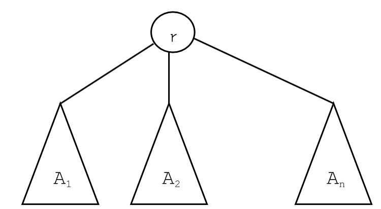
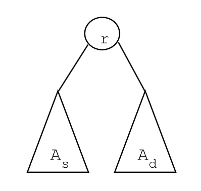

Un arbore cu rădăcină este o structură de date constituită dintr-o mulţime
finită de elemente denumite noduri, mulţime care satisface una dintre următoarele
două condiţii:
1. este vidă;
2. conţine un nod special denumit rădăcina arborelui, toate celelalte noduri fiind
partiţionate în n>=0 arbori cu rădăcină A 1 , A 2 , ..., A n.
Arborii A 1 , A 2 , ..., A n sunt denumiţi subarbori ai nodului rădăcină, iar nodurile
conţinute în subarbori sunt considerate descendenţi ai nodului rădăcină. Rădăcinile
arborilor A 1 , A 2 , ..., A n sunt denumite descendenţi direcţi sau fii ai rădăcinii
arborelui. Rădăcina arborelui este considerată nod părinte (sau tată) al rădăcinilor
arborilor A 1 , A 2 , ..., A n.

Arbore binar
O clasă foarte importantă de arbori cu rădăcină o constituie arborii binari. Un
arbore binar este un arbore cu rădăcină în care fiecare nod are cel mult doi
subarbori, denumiţi subarborele stâng şi subarborele drept. Rădăcina subarborelui
stâng se numeşte fiu stâng, iar rădăcina subarborelui drept se numeşte fiu drept al
rădăcinii.

Interval
Un interval [L, R] (1 ≤ L ≤ R ≤ N) este mulțimea elementelor de pe pozițiile dintre L și R dintr-un șir.